Durante el Curso🎓
Juego de plataforma
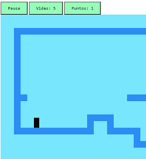Jugar
Contar palabras
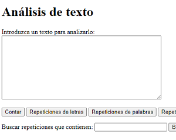CONTAR
Juego Shotter

Juego de plataforma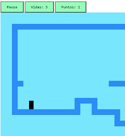Jugar |
Contar palabras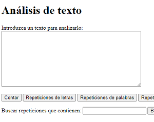CONTAR |
Juego ShotterJUGAR |
Calculadora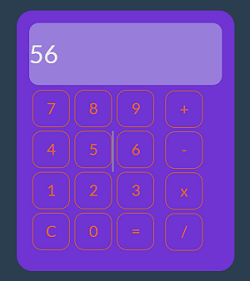CALCUALR |
Examen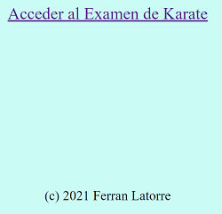ENTRAR EXAMEN |
Aqui podemos ver algunos de los trabajos realizados durante el curso en DAW1, todas ellas realizadas
con gran esfuerzo, podeis entrar en cada una de ellas para verlas y jugar
Nectarina |
Albaricoques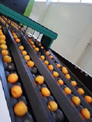 |
Nectarina |
Un verano trabajando duro, haciendo entre 12 y 14 horas cada dia de lunes a sabado
sin poder dormir mas de 5 horas al dia, siendo maquinista de "Greefa"
Mora de montañana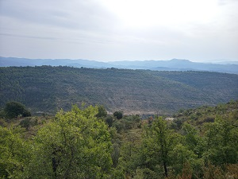 |
Puente de Montañana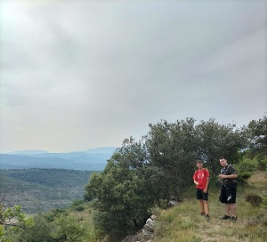 |
Montañana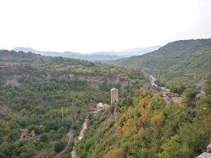 |
Una mañana con mis dos amigos subiendo en las muntañas de Montañana,
haciendo una pequeña caminata de unos 12km con unas vistas increibles
Puesta de sol playa de la pineda |
Pez volador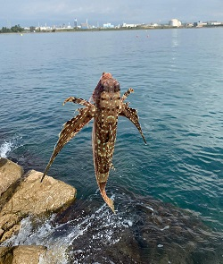 |
Unas pequeñas vacaciones en la playa de la pineda despues de trabajar 3 meses,
con buenas vistas al mar, y sacando algunos peces poco comunes
Pesca de la carpa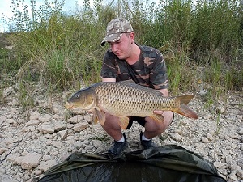 |
Pesca del blackbass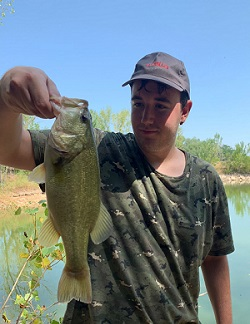 |
Poueta de sol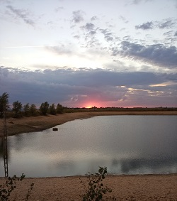 |
Estas fueron algunas de las capturas que he capturado los dias que fui a pescar,
todos ellos fueron en embalses cerca de mi pueblo